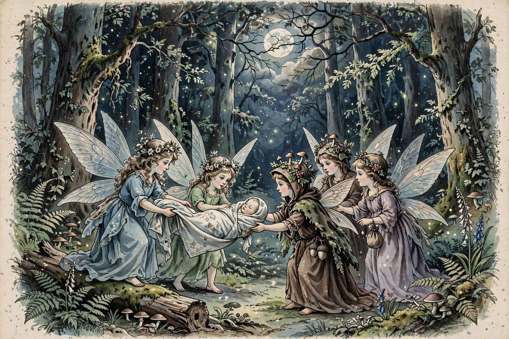

| Grouping | Folklore, fairy lore |
|---|---|
| Region | Europe, esp. Ireland, Scotland, Scandinavia |
A changeling in European folklore is a child believed left by fairies, elves or trolls in place of a stolen human child.
Characteristics
The substitute was said to be sickly, demanding, strangely knowing or failing to grow. Tales describe exposing it - brewing in eggshells, making it laugh - so the fairies return the real child. Iron, baptism and watchfulness were protections.
Interpretations
Scholars link the belief to pre-modern attempts to explain illness, disability and developmental differences, sometimes with tragic consequences for children, and to fears around infant mortality.
In literature
Changelings appear in Shakespeare's A Midsummer Night's Dream, Yeats's "The Stolen Child", and much modern fantasy.